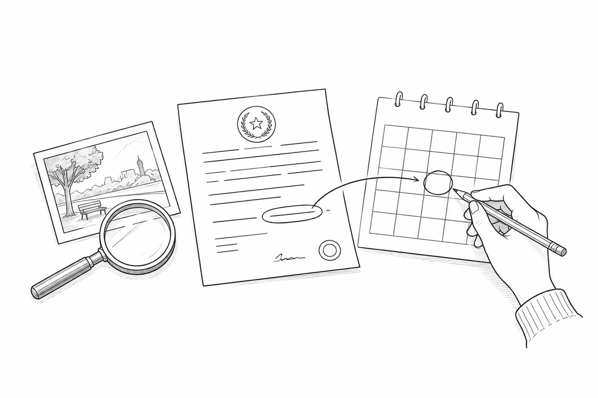

- Lean el ejemplo y los tres casos.Ejemplo: página 2 · Casos: páginas 3–4, 6 y 8.
- Comparen cada mensaje con sus evidencias.Observen el perfil, los reenvíos y las reacciones; comprueben fuentes y fechas.
- Respondan y justifiquen cada conclusión.Escriban en las páginas 5, 7 y 9. Citen las fichas de evidencia.
- Completen el informe final y revisen su guía.Páginas 10 y 11 · Pueden conversar en parejas; cada estudiante escribe.
